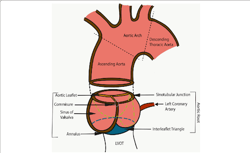

Aortic Root
The complex structure of the aortic root

"Aortic Root Anatomy". Nagpal, P., Agrawal, M. D., Saboo, S. S., Hedgire, S., Priya, S., & Steigner, M. L. (2020). Imaging of the aortic root on high-pitch non-gated and ECG-gated CT: awareness is the key!. Insights into imaging, 11(1), 51. https://doi.org/10.1186/s13244-020-00855-w
[1].